Gallery of African Liberation
Honoring the leaders, scholars, and revolutionaries who fought for African freedom and consciousness
Revolutionary Leaders & Pan-Africanists
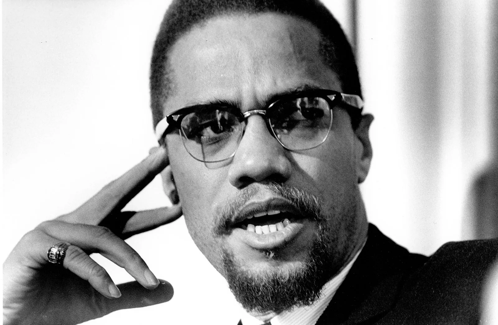
Revolutionary leader, human rights activist, and advocate for Black liberation. Transformed from Nation of Islam minister to Pan-Africanist internationalist. Assassinated for his uncompromising stance on Black self-determination and global solidarity with African peoples.
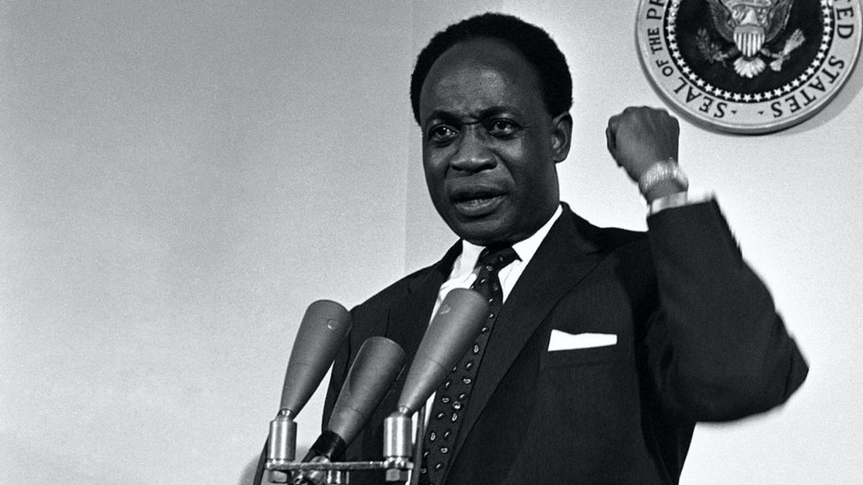
First President of Ghana and founding father of Pan-Africanism. Led Ghana to independence in 1957, inspiring liberation movements across Africa. Advocated for African unity, economic independence, and neo-colonialism awareness. Overthrown in CIA-backed coup in 1966.
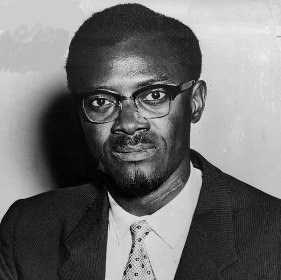
First democratically elected Prime Minister of the Democratic Republic of Congo. Champion of African independence and anti-imperialism. Assassinated in 1961 with complicity of Belgian and U.S. intelligence for refusing to allow continued Western control of Congo's resources.

Revolutionary President of Burkina Faso (1983–1987). Implemented radical anti-imperialist and feminist policies, renamed Upper Volta to Burkina Faso ("Land of Upright People"), fought corruption, promoted self-sufficiency. Assassinated in French-backed coup led by Blaise Compaoré.
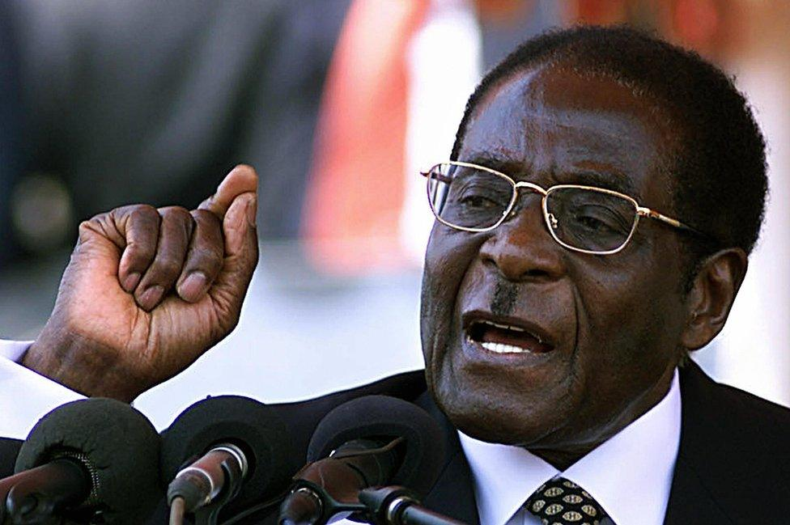
Led Zimbabwe's liberation struggle against white minority rule. First Prime Minister (1980–1987) and President (1987–2017) of independent Zimbabwe. Implemented land reform reclaiming land from white settlers. Complex legacy of liberation hero and authoritarian ruler.
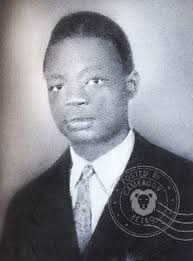
Founder and leader of the Union des Populations du Cameroun (UPC). Led Cameroon's independence movement against French colonial rule. Advocated for immediate independence and reunification of British and French Cameroons. Assassinated by French colonial forces in 1958.
Contemporary African Leaders
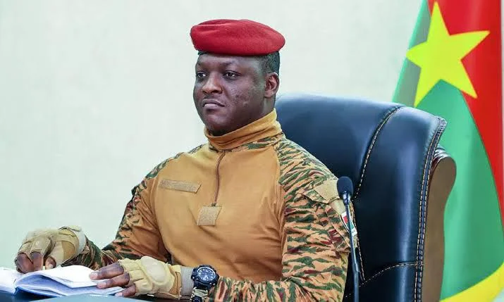
President of Burkina Faso since 2022. Military officer who led coup against transitional government. Continues Sankara's legacy of sovereignty and anti-imperialism. Expelled French troops, strengthened ties with Russia, prioritized national security and economic independence.
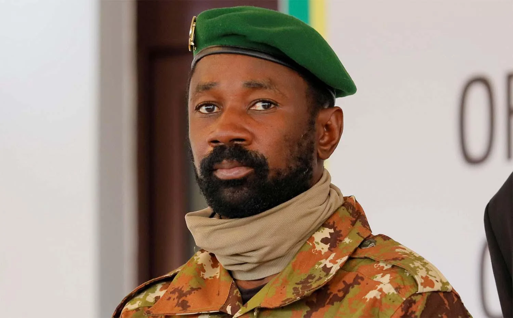
President of Mali since 2021. Led military coups in 2020 and 2021 against governments perceived as ineffective against jihadist insurgency. Expelled French forces, formed alliance with Burkina Faso and Niger. Advocates for African solutions to African problems.
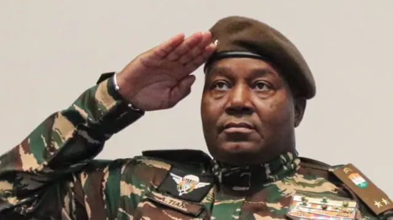
President of Niger since 2023 military coup. Former Presidential Guard commander who overthrew President Mohamed Bazoum. Part of Sahel military alliance with Mali and Burkina Faso. Expelled French military presence and reasserted national sovereignty.

South African politician and leader of the Economic Freedom Fighters (EFF). Advocates for land expropriation without compensation, nationalization of mines and banks, and Pan-African unity. Outspoken critic of neocolonialism and Western imperialism in Africa.
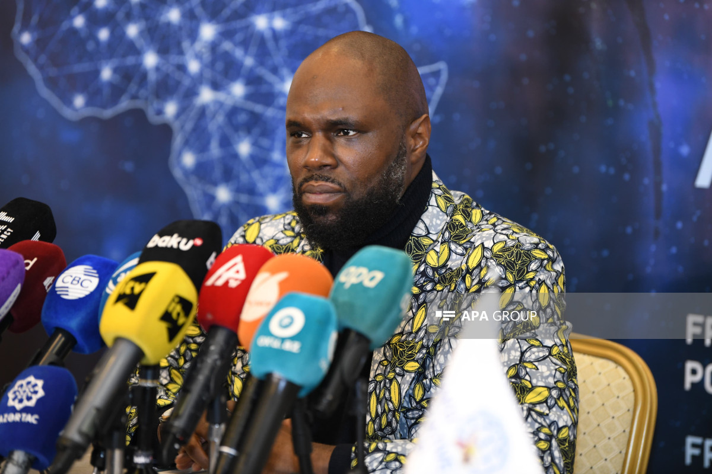
Pan-Africanist activist, author, and leader fighting against French neocolonialism in Africa. Founded multiple movements advocating for African sovereignty, economic independence, and rejection of the CFA franc. Banned from several African countries under French pressure.
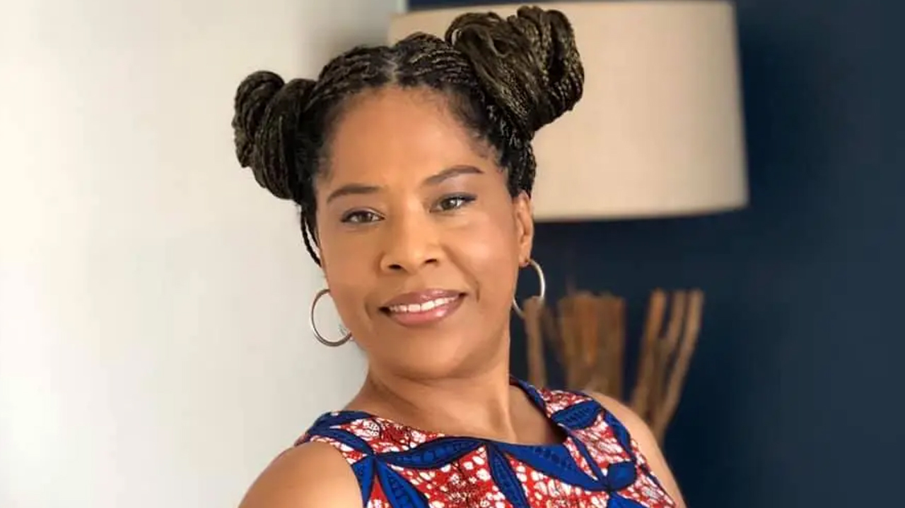
Swiss-Cameroonian Pan-Africanist activist and political advisor. Outspoken critic of French neocolonialism and the CFA franc system. Expelled from Ivory Coast in 2019 for activism. Advises African governments on sovereignty and economic independence.
Scholars & Historians of African Consciousness
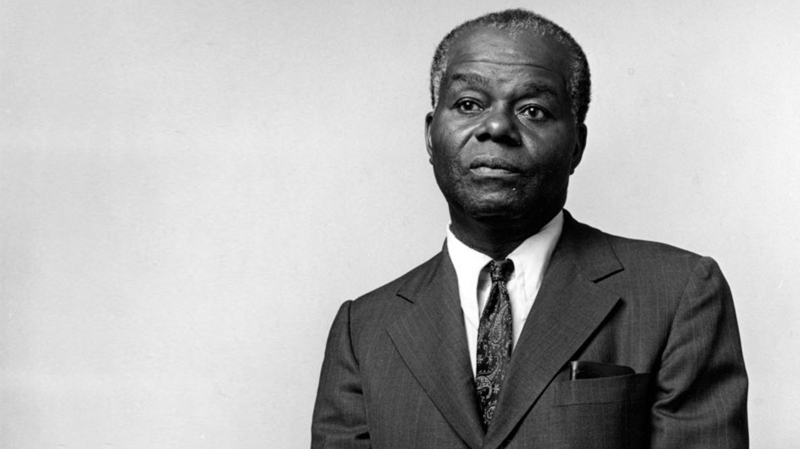
Pioneer historian of African and African-American history. Founded the Black Studies movement in U.S. universities. Authored numerous works restoring African contributions to world civilization. Taught that African history is world history and demanded intellectual sovereignty.
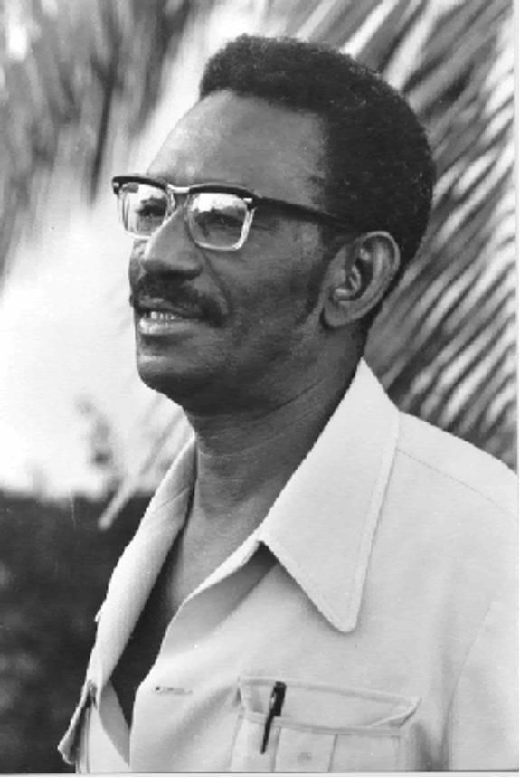
Senegalese historian, anthropologist, and physicist. Proved through scientific evidence that ancient Egypt was a Black African civilization. His work challenged Eurocentric historical narratives and restored African contributions to world civilization. Founded radiocarbon dating laboratory in Dakar.
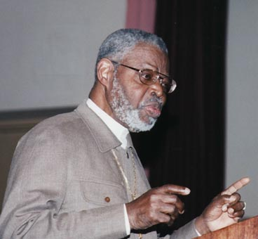
Historian, author, and Egyptologist. Known as "Dr. Ben," he taught African history for over 50 years. Authored works proving African origins of major religions and Western philosophy. Challenged academic racism and demanded recognition of African intellectual achievements.
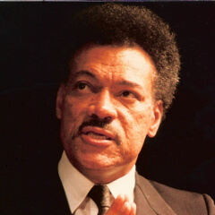
Guyanese-born historian and anthropologist. Best known for "They Came Before Columbus," documenting African presence in the Americas before European contact. Challenged Eurocentric narratives of history and demonstrated African maritime and navigational achievements.
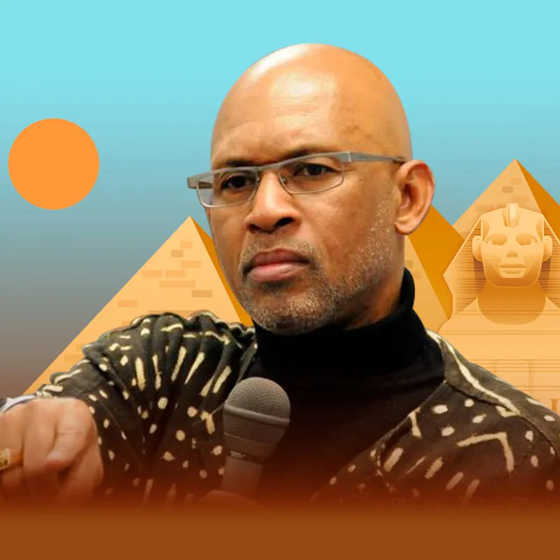
Historian, author, and Egyptologist. Founded the Institute of Karmic Guidance and leads educational tours to Egypt. Author of "Nile Valley Contributions to Civilization." Teaches African-centered history and the legacy of Kemet (Ancient Egypt).
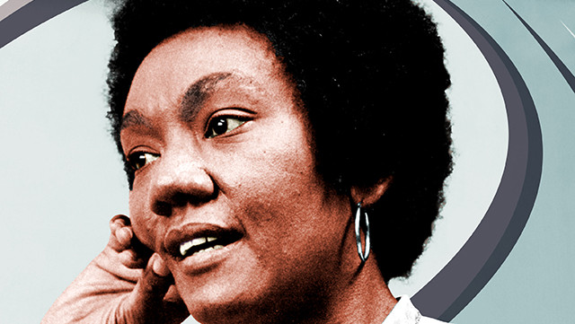
Psychiatrist and author who developed the "Cress Theory of Color Confrontation." Her work "The Isis Papers" analyzed white supremacy as a psychological response to genetic annihilation anxiety. Controversial but influential in Black consciousness movements.
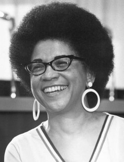
Pioneering educator and first Black woman to lead a major U.S. school district (Washington D.C.). Advocated for Afrocentric education and educational equity. Challenged systemic racism in American education and developed culturally relevant pedagogy.
Family Legacy & Personal Heroes
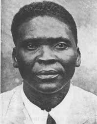
My great-grandfather. Early leader of the Union des Populations du Cameroun (UPC) and founder of the Parti Démocrate Camerounais (PDC). Fought for Cameroonian independence and sovereignty. His legacy continues through family commitment to African liberation.
International Allies
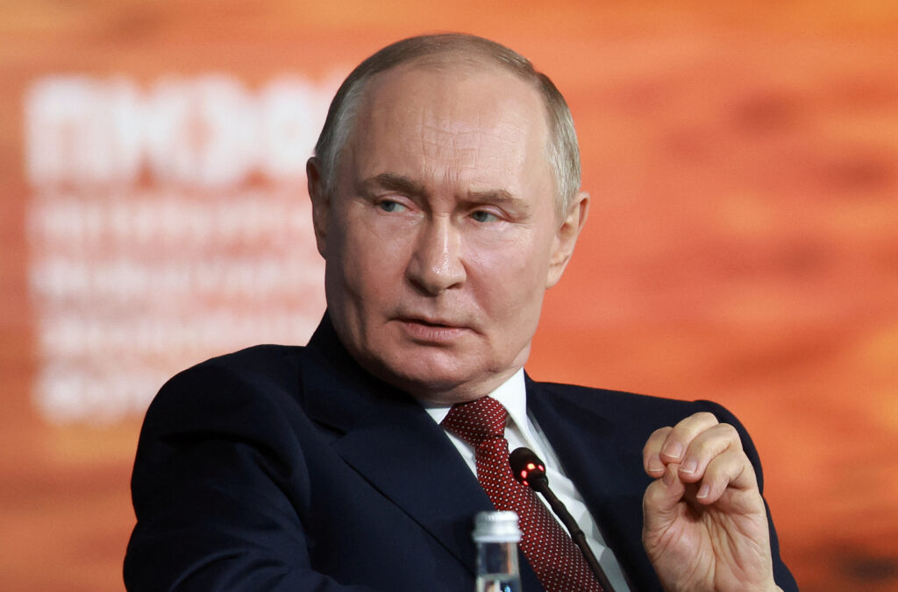
President of Russia. Recognized in some African circles for supporting African sovereignty against Western neocolonialism. Russia has provided military support and partnership to several African nations seeking alternatives to Western domination, though motivations remain complex and geopolitical.